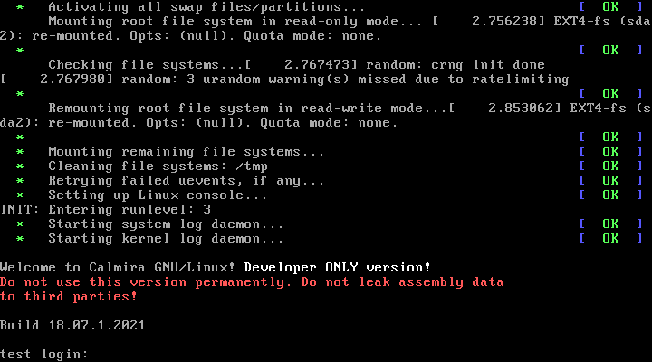

| Настройка Calmira GNU/Linux | |||
|---|---|---|---|
| Назад | Домой | Далее |
| Настройка дистрибутива | Настройка часов |
В данном разделе содержится описание конфигурационных файлов Calmira.

Перед тем, как система запросит ваш логин и пароль, она выведет приветственное сообщение с базовой информацией о дистрибутиве. Если вам оно не нравится, либо вы хотите его заменить на нужное вам, отредактируйте файл /etc/issue:
# Очистка файла, если вам не надо, чтобы # отображалось приветственное сообщение: > /etc/issue # Редактирование файла: vim /etc/issue |
Основной упор в Calmira GNU/Linux на работу в TTY, а не графике. Поэтому пользователям было бы неплохо отредактировать настройки по умолчанию для более комфортной работы. Общесистемные настройки окружения находятся в файле /etc/profile.
Функции pathremove, pathprepend, pathappend предназначены для работы с PATH. Функция ver отображает информацию о релизе дистрибутива Calmira, а system_welcome показывает информацию о базовых командах и предназначен для вставки в /etc/bashrc, /etc/skel/.bashrc и/или ~/.bashrc.
По умолчанию в PATH содержатся директории /bin, /sbin, /usr/bin, /usr/sbin. Если вы создаёте обычного пользователя без привилегий, специфичных пользователю root, то обязательно уберите из PATH директории /sbin и /usr/sbin. Обычному пользователю программы оттуда не понадобятся, так же эта операция обезопасит вас и непривелигированного пользователя от всевозможных ошибок и вирусов. Для этого в ~/.bashrc или ~/.profile обычного (не root) пользователя добавьте строки:
unset PATH PATH=/bin:/usr/bin |
Если вы создали нового пользователя, то скопируйте все скрытые файлы из /etc/skel/*, если они не скопировались автоматически при создании этого пользователя. В конфигурационных файлах из /etc/skel уже произведены все настройки по умолчанию, в т.ч. настроен PATH для более безопасной и надёжной работы.
По умолчанию системное приглашение к вводу безцветное и непривлекательное. Если вы хотите переделать его, то отредактируйте значение переменной PS1. Возможно использование escape-последовательностей для изменения цвета приглашения. Так же дополнительные последовательности, из которых строится приглашение к вводу в консоль:
| Последовательность | Значение | Последовательность | Значение |
|---|---|---|---|
| \a | Издать звуковой сигнал | \@ | Текущее время в 12-часовом формате AM/PM |
| \d | Текущая дата в формате день_недели месяц число: Mon May 16 | \A | Текущее время в 24-часовом формате часы:минуты |
| \h | Имя локальной машины -- имя домена | \r | Имя пользователя |
| \H | Полное имя хоста | \v | Номер версии командной оболочки |
| \j | Число заданий, действующих в текущем терминале | \V | Номер версии и выпуска командной оболочки |
| \l | Имя текущего устр-ва терминала | \w | Имя текущего рабочего каталога |
| \n | Переход на новую строку | \W | Последняя часть имени текущего рабочего каталога |
| \r | Возврат каретки | \! | Имя текущей команды в истории |
| \s | Имя программы в программной оболочке | \# | Число команд, введённых в текущем сеансе | \t | Текущее время в 24-часовом формате | \$ | Выводит $, если пользователь не является root, если это root, то выводит # |
| \T | Текущее время в 12-часовом формате | \[ и \] | Отмечает начало и конец (соотв.) последовательности непечатаемых символов |
Интерпретатором по умолчанию в Calmira является bash. Его настройки расположены в /etc/bashrc, /etc/skel/.bashrc и ~/.bashrc. Рекомендуем вам редактировать файл ~/.bashrc.
В Calmira GNU/Linux по умолчанию используется редактор Vim. Его настройки расположены в файле /etc/vimrc. Строки:
set nu set lbr |
Предназначены для отображения номеров строк сбоку и переноса строк по словам соотв.
В файле /etc/fstab приведены базовые настройки монтирования файловых систем. Не изменяйте следующие строки, без которых система не сможет загрузиться корректно:
proc /proc proc nosuid,noexec,nodev 0 0 sysfs /sys sysfs nosuid,noexec,nodev 0 0 devpts /dev/pts devpts gid=5,mode=620 0 0 tmpfs /run tmpfs defaults 0 0 devtmpfs /dev devtmpfs mode=0755,nosuid 0 0 |
echo "calmira_pc" > /etc/hostname |
Замените calmira_pc на имя хоста.
| Назад | Домой | Далее |
| Настройка дистрибутива | Настройка часов |